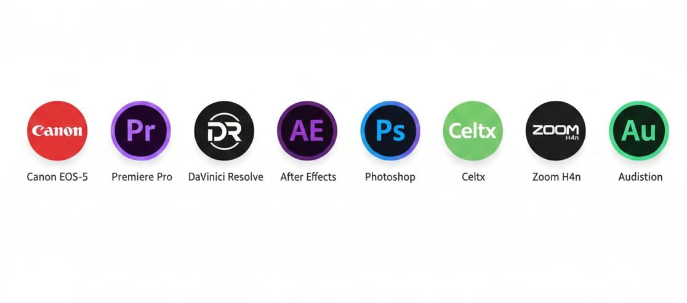

Mi visión en producción audiovisual
Cada proyecto es una historia que cobra vida en imágenes y sonidos. Aquí puedes ver algunos de mis trabajos como si fueran proyectados en una pantalla de cine.
Proyecto: Artefacto
Rol: Productora
Herramientas: Adobe Premiere Pro, DaVinci Resolve, StudioBinder
Proyecto: Intrusion
Rol: Coordinadora de Producción, Editora, Arte, Guionista
Herramientas: Adobe Premiere Pro, After Effects, DaVinci Resolve, Photoshop, Celtx (para guion)
Proyecto: Entre Notas
Rol: Guionista, Directora de Continuidad, Gaffer, Audio
Herramientas: Celtx (guion), Adobe Premiere Pro (edición), Pro Tools / Audition (audio), kit de iluminación y reflectores (gaffer), cámara DSLR Canon
Mis herramientas audiovisuales

Estas son las herramientas que me acompañan en cada proyecto:
- Cámaras Canon EOS-5
- Software de edición: Adobe Premiere Pro, DaVinci Resolve
- Motion y arte: After Effects, Photoshop
- Guion: Celtx
- Audio: Zoom H4n, Adobe Audition